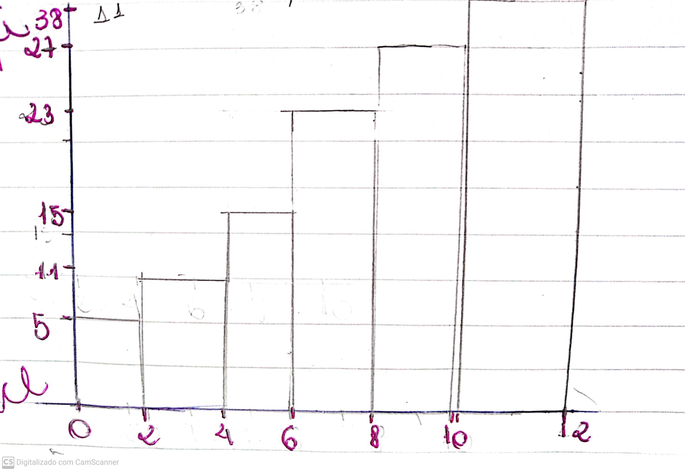

Estatística
Vamos realizar um exercício para revisarmos o conteúdo de uma forma rápida.
1- Abaixo temos as notas que 30 estudantes tiraram numa avaliação, em ordem crescente.
| 0,0 |
0,6 |
1,0 |
1,5 |
1,8 |
2,1 |
2,2 |
2,8 |
3,5 |
3,5 |
| 3,5 |
4,8 |
5,0 |
5,0 |
5,0 |
6,0 |
6,2 |
6,8 |
7,0 |
7,0 |
| 7,0 |
7,0 |
7,5 |
8,5 |
8,8 |
9,2 |
9,9 |
10 |
10 |
10 |
a) Crie uma tabela com a distribuição de frequências em 5 classes.
b) Crie um grágico das frequências acumuladas.
c) Calcule a média, a moda e a mediana.
- 1°: calcule a amplitude total. Ela é a diferença entre o maior valor da tabela e o menor. No nosso caso é: A = 10 - 0 -> 10
- 2°: calcule a quantidade de classes: nesse caso não é necessário pois o exercício já nos da.
- 3°: calcule a amplitude de cada classe -> h=2
- 4°: o intervalo é feito através da amplitude( no caso de dois em dois)
- 5°: o símbolo "|", inclui o lado esquerdo e o direito não. Exemplo: 0|-2 <- este intervalo vai de 0 a 1.9
- 6°: vamos contar quantos números tem nesse intervalo.
- 7°: "Xi", é o ponto médio. É o número que está no meio do intervalo. Exemplo: 0|-2 -> soma-se e divide por 2 -> 1
- 8°: "fi" frequência acumulada, é a soma das frequências até a classe.
| classe |
quant |
xi |
Fi |
| 0|-2 |
5 |
1 |
5 |
| 2|-4 |
6 |
3 |
11 |
| 4|-6 |
4 |
5 |
15 |
| 6|-8 |
8 |
7 |
23 |
| 8|-10 |
4 |
9 |
27 |
| 10|-12 |
3 |
11 |
38 |
Gráfico:

Para calcular a média:
- 1°: somam-se todos os elemntos da tabela
- 2°: após isso divida pelo o total de números
Para calcular a moda:
- A moda é nada mais, nada menos do que, o número que aparece por mais vezes na tabela.
Para calcular a mediana
- É o valor que se encontra no meio
- É a média do dos dois números centrais. Somam-se e divide-se por 2.